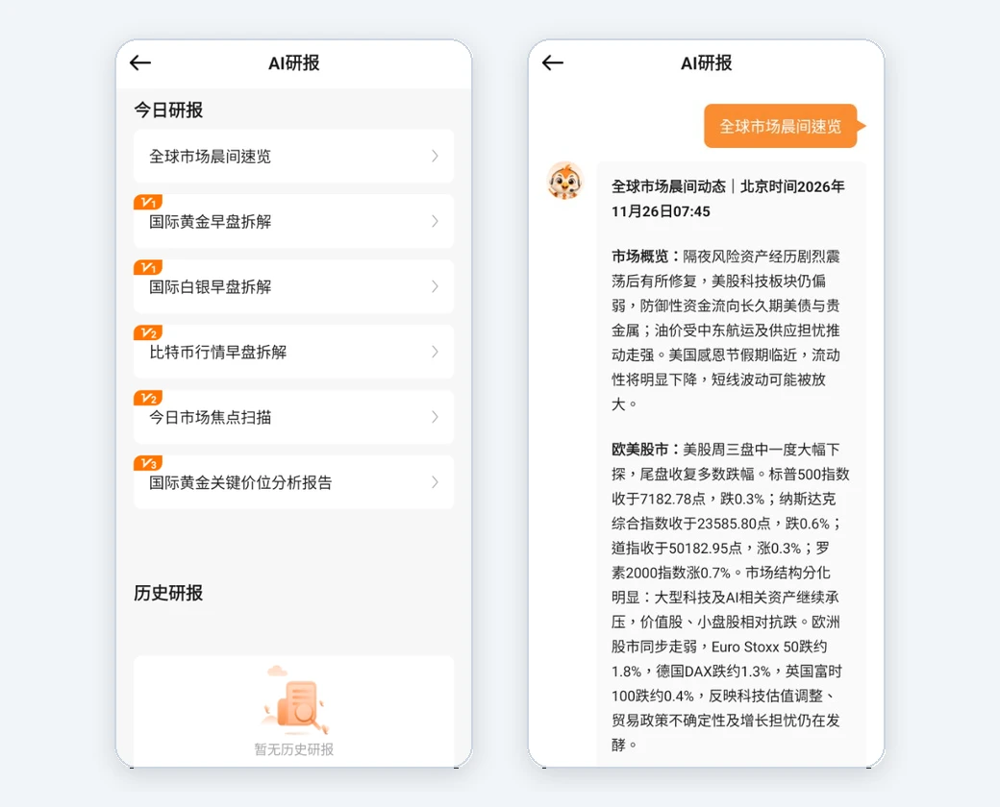
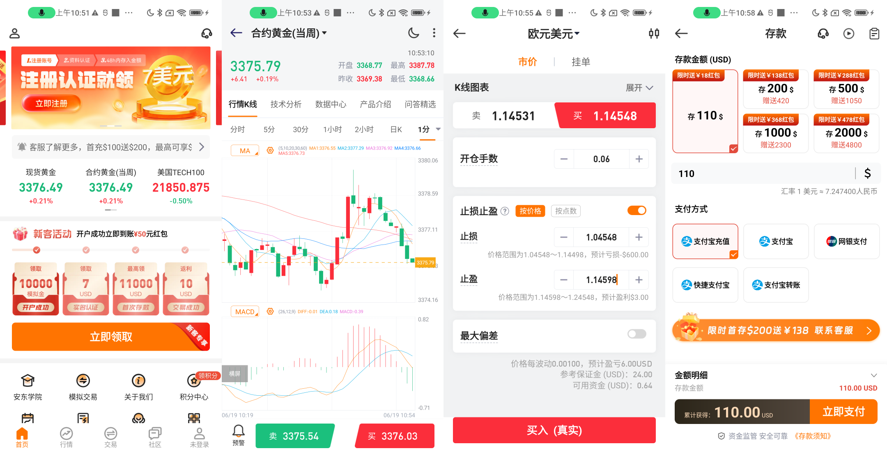
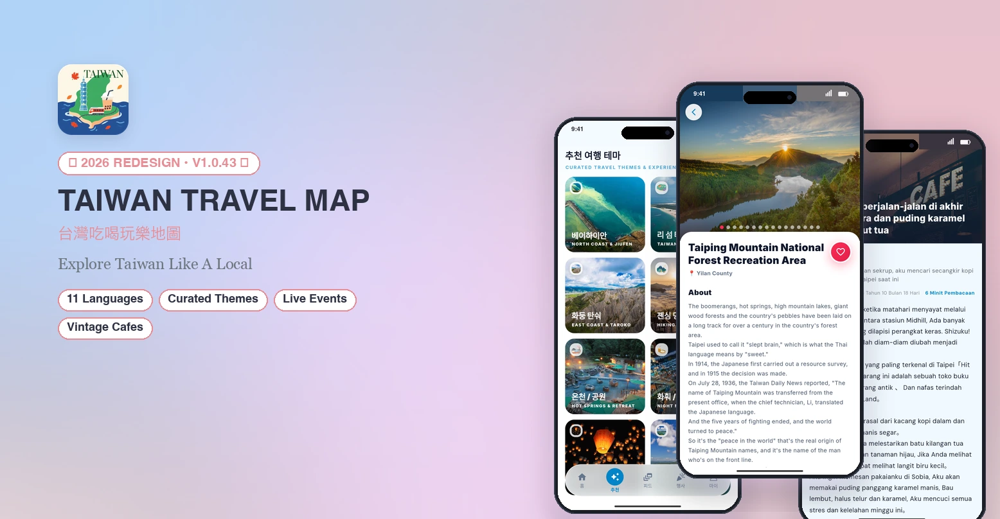
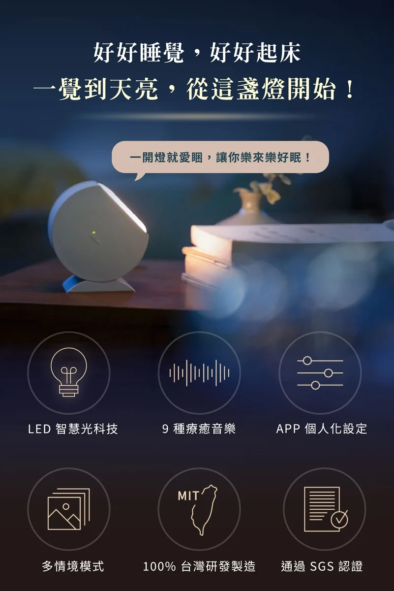
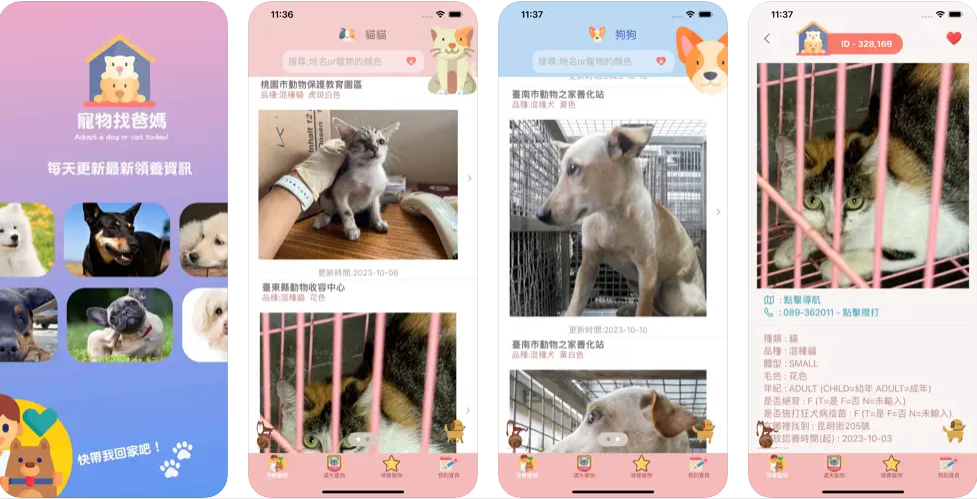
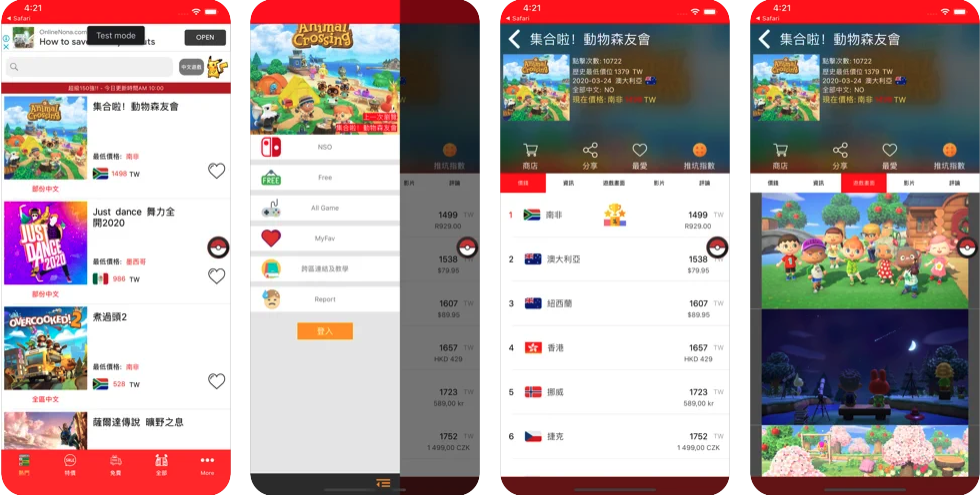

金融 AI 研報與瞬間大漲預測系統｜PyTorch RAG / TensorFlow
於正式上線金融交易 App 建構基於 PyTorch 的 RAG 管線（「AI 研報」），整合全球市場新聞、總經動態與國際黃金、白銀、比特幣、歐美指數領域資料，自動化產出每日晨間速覽、早盤拆解與關鍵價位分析報告。同步使用 TensorFlow 開發金融商品短線瞬間大漲機率預測模型，涵蓋時序資料清理、特徵工程與模型收斂／過擬合評估。
公司網站生成式 AI 解決方案工程師
PyTorch RAG、TensorFlow、Python、Android 與 Flutter。
EN | 繁體中文
11 年以上大型商業產品開發經驗（含 Google 專案經歷）
PyTorch RAG、TensorFlow、Python 數據管線、Android 與 Flutter。
我專注於將生成式 AI 與深度學習技術穩定落地至高可用商用產品，涵蓋領域數據預處理、模型建模與評估、可擴展系統架構、自動化測試與生產環境交付。目前聚焦於金融科技領域之 PyTorch RAG 檢索增強生成管線、TensorFlow 瞬間大漲機率預測模型，以及可重複運作的自動化與 MLOps / CI-CD 工作流。
運用 PyTorch 建構結合金融領域知識的 RAG（檢索增強生成）管線，將全球行情、總經動態與大宗商品資訊自動化轉化為線上交易 App 的「AI 研報」與對話式助手。使用 TensorFlow 開發金融商品短線瞬間大漲機率預測模型，涵蓋領域特定數據預處理、特徵工程，以及透過效能指標診斷收斂、過度擬合（Overfitting）與擬合不足（Underfitting）。
擅長以 Python 設計高可靠性數據與自動化管線，包含於 Google 開發高流量測試報告與錯誤日誌 Data API，以及打造「一鍵式」自動化測試管線；於現職建置 n8n 與 GitHub Actions 自動化交付流程。熟悉 Linux、Docker 容器化部署、GPU 硬體加速（CUDA）、Git 版本控管與高標準單元測試（90%+ 測試覆蓋率）。
具備 11 年以上 Android（Kotlin、Jetpack Compose、MVI/MVVM）與 Flutter（Riverpod、BLoC、Platform Channels）端到端架構主導經驗。曾打造高容錯 M3U8/HLS 影音串流與離線下載引擎（無當機率 99.9%）、Android TV 物聯網系統，以及承載 16,000+ 同時在線之高併發金融交易後端。
善於與產品、硬體、韌體、後端、交易領域與 QA 團隊密切合作，共同定義業務與模型需求、建立評估指標、優化訓練與發布流程，並能同時推動多個並行專案穩定上線。
涵蓋生成式 AI、深度學習模型、Python 數據管線、商用行動端與智慧連網裝置的代表性專案。

於正式上線金融交易 App 建構基於 PyTorch 的 RAG 管線（「AI 研報」），整合全球市場新聞、總經動態與國際黃金、白銀、比特幣、歐美指數領域資料，自動化產出每日晨間速覽、早盤拆解與關鍵價位分析報告。同步使用 TensorFlow 開發金融商品短線瞬間大漲機率預測模型，涵蓋時序資料清理、特徵工程與模型收斂／過擬合評估。
公司網站
於 Google 專案開發 Python Data API，彙整、清理與分析 Pixel 6 與 Pixel 7 系列大量測試報告與錯誤日誌；同時開發 Pixel Watch eSIM 模組韌體測試介面並整合 Python 自動化腳本打造「一鍵式」測試管線，維持核心模組 90% 以上單元測試覆蓋率。
了解更多


主導 Android TV 與連鎖零售互動廣告機開發（部署於台灣與上海屈臣氏、康是美等通路），實作手機與電視跨裝置互動、語音控制及藍牙低延遲傳輸功能。
公司網站
採用 MVI 與 Jetpack Compose 打造模組化金融交易客戶端，實作 Socket + Kotlin Flow 即時行情圖表、AI 輔助客服系統、n8n 自動化發布管線與第三方金流整合，加速跨專案新功能開發 50%。
公司網站
打造多款面向市場的筆記、匯率換算與交易工具 App，透過 MVI、Hilt、Retrofit 與 Compose 維持高模組化與可維護性。
應用連結展示從架構規劃、模型／資料整合到雙平台上架維護的端到端商業產品交付經驗。

2026 全面改版 • 支援 11 國語言
獨立設計與上架之跨平台旅遊生活指南 App，整合交通部觀光署開放資料、主題行程、老宅咖啡與全台節慶活動， 支援 11 語系完整在地化與定位導航，涵蓋完整 UI/UX、架構設計與全球 App Store / Google Play 發布維運。
App Store (iOS) | Google Play (Android) | 產品介紹頁

突破 100,000+ 下載
以 Riverpod 與 Freezed 建構校園書籍訂購與會員購物平台，整合 Firebase 認證、推播通知與雲端圖片儲存。
App 下載連結
以 Riverpod 與 Freezed 打造並串接台灣寵物醫院系統，支援飲食、體重與健康病歷追蹤，並整合 Firebase 認證與推播服務。
App 下載連結



以 PHP 排程爬蟲自動蒐集官方價格資料並建立 MySQL 比價服務，搭配原生雙平台客戶端，曾達每月約 1,000 活躍用戶。
影片介紹擁有 11 年以上大型商業產品開發經驗（含 Google 專案歷練）與金融科技深度學習實務落地能力，我能有效銜接「AI 模型研發」與「高可用商用系統」之間的最後一哩路——橫跨 PyTorch RAG、TensorFlow 預測建模、Python 數據管線，以及高穩定跨平台產品架構。
我重視從頭到尾的工程責任：從領域數據清理與特徵工程、模型收斂與過擬合評估，到建置可重複運作的自動化與 CI/CD / MLOps 管線，確保解決方案在真實業務場景下長期穩定運行。
結合國立臺灣師範大學碩士的科學數據分析訓練，以及豐富的跨部門溝通與 Code Review 文化，能快速融入團隊、對齊產品與技術指標，穩定交付高品質的生成式 AI 解決方案。